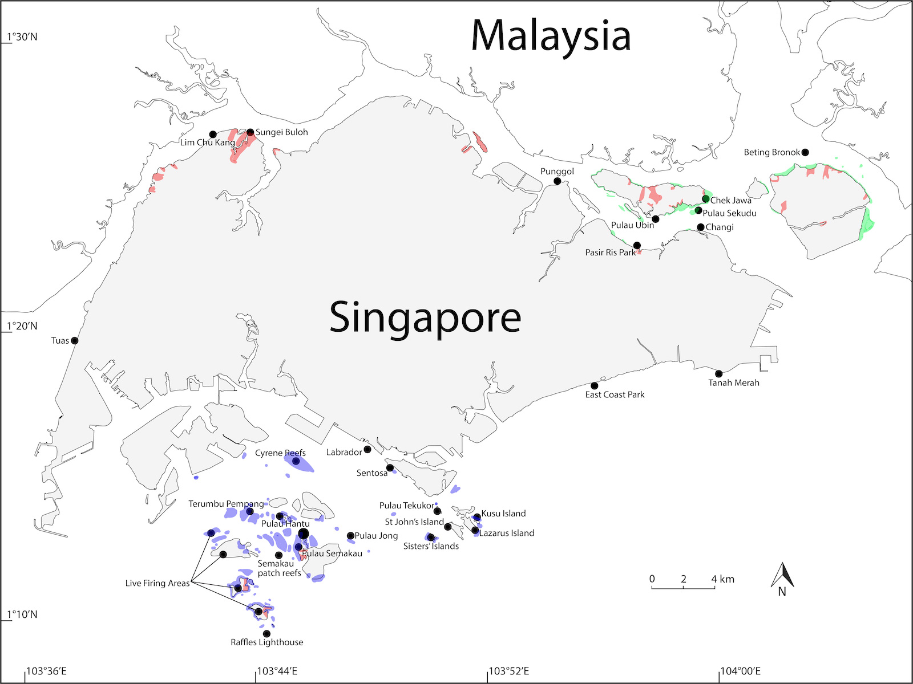
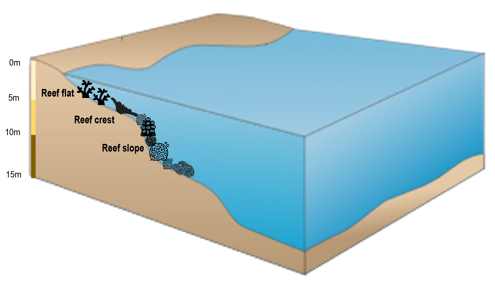
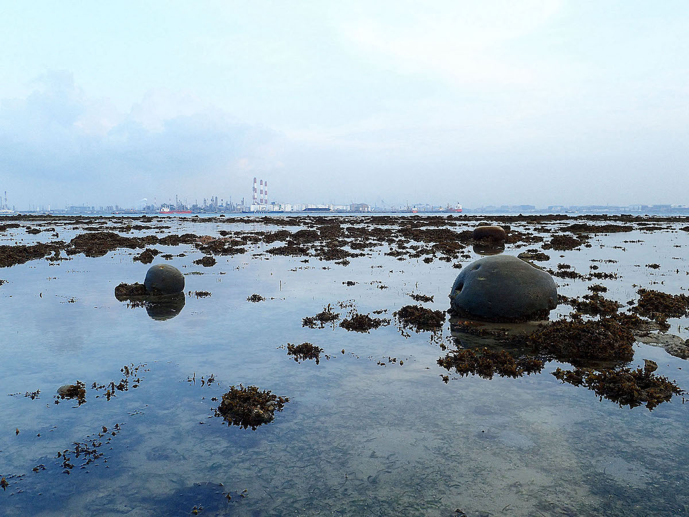
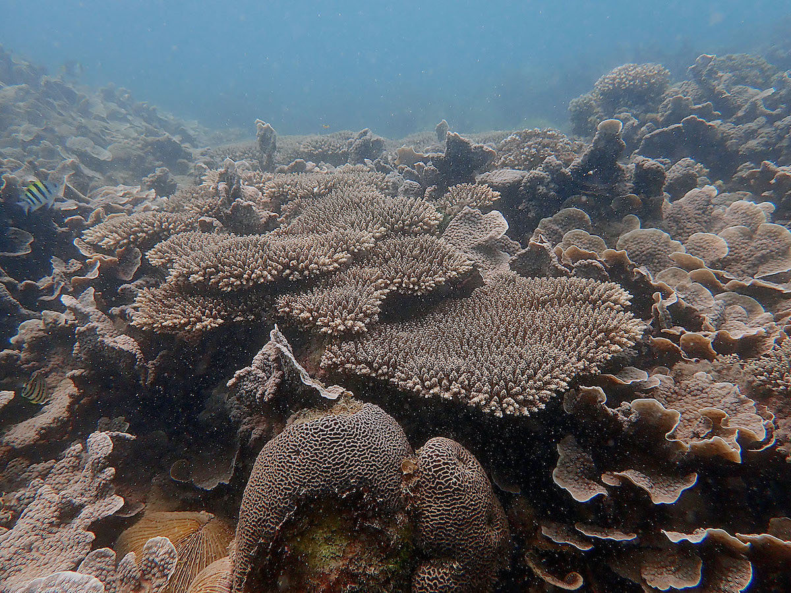
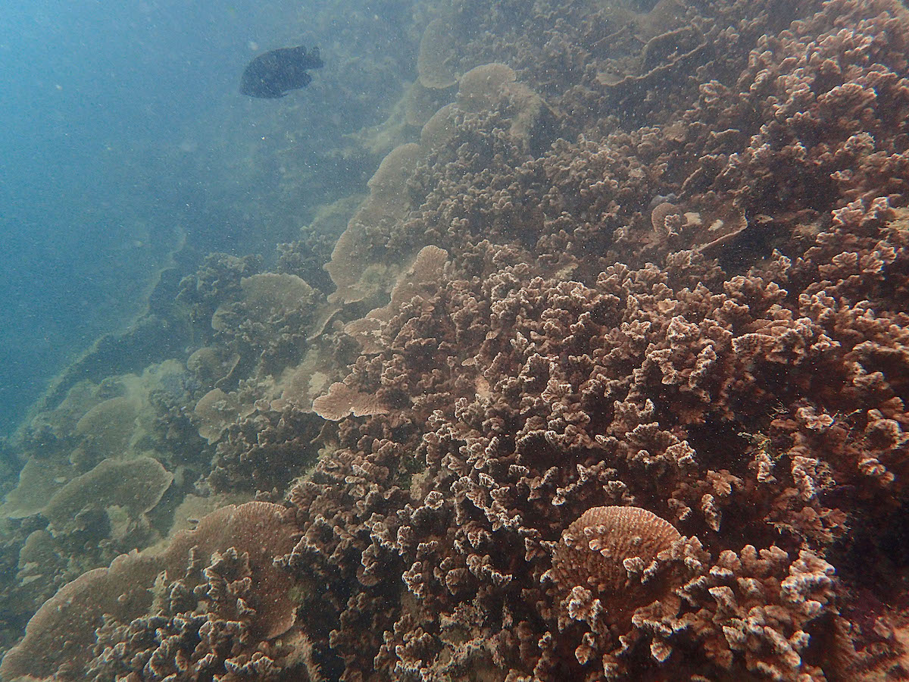

Map showing distribution of coral reefs, mangrove forests and sand/mudflats shaded in blue, red and green, respectively. Published in Lim et al. (2020).
Singapore is part of the Indo-Malayan realm in the tropics, which is well known for being a biodiversity hotspot. The warm and shallow tropical waters surrounding Singapore provide a prime environment for corals to proliferate. Indeed, more than 250 species of corals can be found in Singapore’s waters. These corals collectively make up our reef system which serves many ecologically important functions, such as coastal protection and recreation.
What is a coral reef?
Coral reefs are home to many marine organisms. They are known to be amongst the most diverse ecosystems in the world. Reef-building coral species synthesise calcium carbonate from their environment to form hard exoskeletons. As they continue to expand upward and outward, they eventually form large magnificent underwater structures known as coral reefs.
This reef-building process is heavily dependent on tiny single-celled algae that live within these corals, endosymbionts of the family Symbiodiniaceae (commonly known as zooxanthellae), which are the powerhouse of corals. They synthesise energy from the sun, providing nutrition for their coral hosts to secrete limestone, or calcium carbonate, to expand their exoskeletal armour. In turn, corals provide a suitable and protected environment for the endosymbionts to reside in. Therefore, the process of reef expansion is intricately linked to this host-symbiont relationship between corals and zooxanthellae.
History of coral reefs in Singapore
The coral reefs in Singapore most likely developed after the last ice age when sea level rose, leading to the inundation of dry land which formed shallow seas. They continued to thrive even as Singapore developed and when its marine environment underwent drastic changes. There were once over 60 offshore islands and patch reefs around Singapore, most of which were situated south of mainland Singapore. These coral reefs that have been growing for over 7000 years are the silent record-keepers of Singapore’s underwater environment and contain valuable information on environmental changes over the millennia.
However, the 1970s marked the dawn of major land reclamation on the mainland and the offshore southern islands that led to a major reduction in Singapore’s coral cover. Most of the southern islands were reclaimed, adding 1695 ha to Singapore's total land area and merging some islands. The reef flats of many islands, like Pulau Sudong, Pulau Hantu and Kusu Island were reclaimed right up to the reef slope. During the reclamation process, many coral reef organisms were smothered, while others were severely affected by the rapid rise in water turbidity and decline in visibility. As a result, Singapore has lost about 60% of its coral reef extent and local extinction of coral species have been documented.
Blueprint of Singapore's reefs

General reef profile. Published in Law & Huang (2023).
There are three distinct zones on the coral reefs of Singapore. The diversity of corals present in each zone is dependent on light availability. Starting from the zone closest to shore, the reef flat is the shallowest area of the reef and is periodically inundated. During low tide, certain areas within the reef flat are exposed to air and, often, strong sunlight and freshwater. This area is dominated by boulder corals, sponges, and other marine invertebrates that find solace from the sun and protection from predators like birds in the crevices amongst corals.

Reef flat in Singapore.
Continuing seaward from the reef flat is the reef crest. This zone is not only the richest in the diversity of corals but also functions as an important structure for reducing wave energy, essentially a form of coastal defence. The reef crest is the most exposed part of the reef to incoming waves, resulting in high coral recruitment in this area. As a result, the reef crest is often densely populated with coral species and other sessile marine organisms like sea anemones and seaweeds, intensifying the competition for space. This zone is also home to assemblages of mobile invertebrates and fishes.

Reef crest in Singapore.
Finally, the reef crest leads downwards to the reef slope. Diversity in this zone is significantly lower due to the decrease in light availability as depth increases. Here, plating corals dominate due their ability to spread laterally, increasing their surface area to receive light.

Reef slope in Singapore.